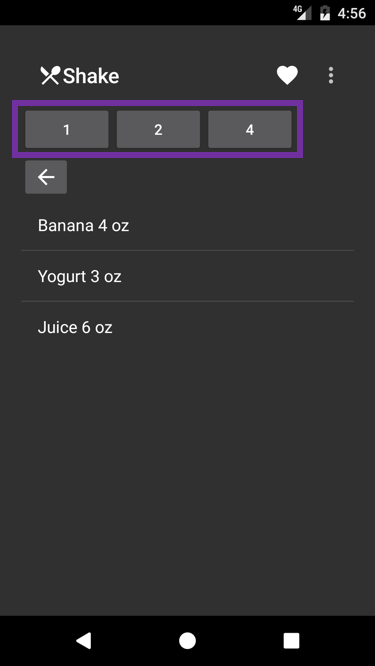
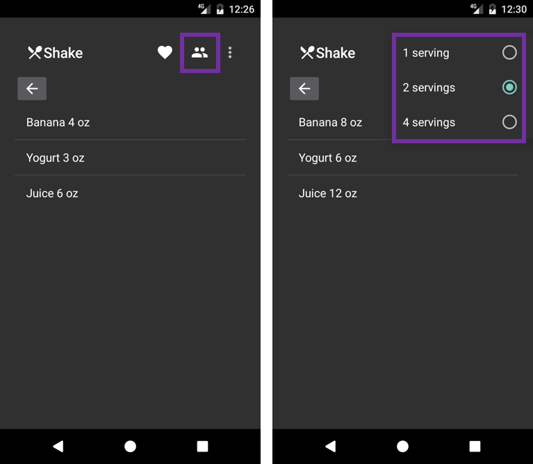

Duration
10 minutes
Goals
The primary goal of this lab is to use XML to define a checkable sub-menu inside a Toolbar's Actions menu. The image below shows the current state of the Recipes app after the completion of Exercise 2. In this exercise, your goal is to work on the highlighted area.
You will add a new entry to the existing XML menu file to define a sub-menu for the "number of servings" action. This action will then appear inside the toolbar so you will be able to remove the buttons used in the current implementation. When you are done, the app should look like the images below. The image on the left shows the "number of servings" action in the toolbar (the "people" icon). The image on the right shows the UI after clicking on the "people" icon to open the submenu. The sub-menu's three entries are radio buttons since they are mutually exclusive (i.e. you would not simultaneously select both 1 serving and 4 servings for a recipe).
Required assets
This is a continuation of the previous exercise. You can use your existing solution or open the solution in the Exercise 2/Completed folder. The Exercise 3 folder contains a subfolder named Completed with a solution you can use to check your work. Please make sure you have these folders before you begin.
Challenge
- Add a single-checkable sub-menu to actions.xml. The sub-menu needs three items: 1 serving, 2 servings, and 4 servings. Give each sub-menu item an id so they can be identified from code.
-
Modify your handler for the toolbar's
MenuItemClickevent so it sets the number of servings appropriately when each of the sub-menu items are clicked. You must also set the checked state of the selected menu item totrue. - Remove the previous implementation (the XML for the buttons and the corresponding code).
Steps
Define the sub-menu
- Open actions.xml.
-
Add the following XML to the actions.xml file after the existing "Add to Favorites"
action. Notice how the top-level
itemhas a nestedmenu- this is what creates a sub-menu that pops up when the user selects the top-level item. Also, note that it uses a single-checkable group - it's the "single" option that creates radio buttons in the sub-menu. Finally, notice that the serving items are given ids so they can be identified from code.<item android:title="Servings" android:icon="@drawable/ic_people_white_24dp" app:showAsAction="always"> <menu> <group android:checkableBehavior="single"> <item android:id ="@+id/oneServing" android:title ="1 serving" android:checked="true" /> <item android:id ="@+id/twoServings" android:title ="2 servings" /> <item android:id ="@+id/fourServings" android:title ="4 servings" /> </group> </menu> </item>
Handle sub-menu click
- Open DetailsActivity.cs.
-
Locate your existing handler for the toolbar's
MenuItemClickevent. You will be adding code to this method. -
Add three new cases to the existing
switchstatement:oneServing,twoServings, andfourServings. Inside each case, call theSetServingsmethod passing the appropriate number of servings (1, 2, or 4). In addition, you must programmatically set single-checkable items to the checked state using theSetCheckedmethod of the menu item (note that the other items in the group will be unset automatically). The code for the new part of the click handler is given below.
Remove unneeded code
- Open Details.axml.
-
Remove the nested
LinearLayoutthat defines the "serving" buttons. - Open DetailsActivity.cs.
-
Remove the click handlers for the three "serving" buttons.
FindViewById<Button>(Resource.Id.oneServingButton).Click += (sender, e) => SetServings(1); FindViewById<Button>(Resource.Id.twoServingsButton).Click += (sender, e) => SetServings(2); FindViewByIdvButton>(Resource.Id.fourServingsButton).Click += (sender, e) => SetServings(4);
Summary
This exercise showed you how to implement a sub-menu of radio buttons. To create a sub-menu, you added
a menu inside an existing item. To make the sub-menu use radio buttons, you
used a group with checkableBehavior set to single.